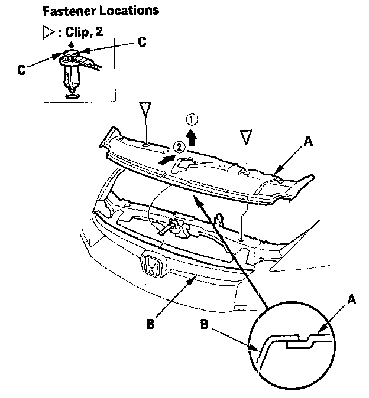

Front Grille Cover Replacement
Front Grille Cover ReplacementNOTE:
- When prying with a flat-tip screwdriver, wrap it with protective tape to prevent damage.
- Take care not to scratch the rear bumper and body.
1. Remove the front fender trim from both sides.

2. Remove the clips by carefully pulling the font grille cover (A) up, then remove the cover by releasing the front edge of the cover from the grille (B). Take care not to scratch the body.
NOTE: To remove the clips, pry the inner clip up at the edge near the line (C) on its head.
3. Install the covers in the reverse order of removal, and note these items:
- Check if the clips are damaged or stress-whitened, and if necessary, replace them with new ones.
- Push the clip portions into place securely.